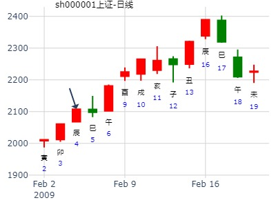
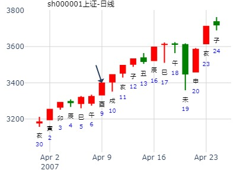

主帖标题: T-Z-G-D上证指数擂台赛第四场第3局2020年1月15日）G方
今天下午起了一卦，复杂，不断了，以第一局卦再断
2020.01.11 6:30 得 家人之渐
干支：己亥年 丁丑月 癸丑日
请大家发表意见
巽宫：风火家人 艮宫：风山渐 (归魂)
六神 伏神 本 卦 变 卦
白虎 兄弟辛卯木 ▅▅▅▅▅ 兄弟辛卯木 ▅▅▅▅▅ 应
腾蛇 子孙辛巳火 ▅▅▅▅▅ 应 子孙辛巳火 ▅▅▅▅▅
勾陈 妻财辛未土 ▅▅ ▅▅ 妻财辛未土 ▅▅ ▅▅
朱雀 官鬼辛酉金 父母己亥水 ▅▅▅▅▅ 官鬼丙申金 ▅▅▅▅▅ 世
青龙 妻财己丑土 ▅▅ ▅▅ 世 子孙丙午火 ▅▅ ▅▅
玄武 兄弟己卯木 ▅▅▅▅▅ ○→ 妻财丙辰土 ▅▅ ▅▅
15日巳日， 判断：小涨
主帖标题: 测下周沪市大盘 1.16-20
公历起卦时间：2023年1月13日9时23分 (按农历时间起卦)
干支：壬寅年 癸丑月 辛未日 癸巳时 （日空：戌亥）
巽宫：风火家人 艮宫：风山渐 (归魂)
六神 伏神 本 卦 变 卦
螣蛇 兄弟辛卯木 ▅▅▅▅▅ 兄弟辛卯木 ▅▅▅▅▅ 应
勾陈 子孙辛巳火 ▅▅▅▅▅ 应 子孙辛巳火 ▅▅▅▅▅
朱雀 妻财辛未土 ▅▅ ▅▅ 妻财辛未土 ▅▅ ▅▅
青龙 官鬼辛酉金 父母己亥水 ▅▅▅▅▅ 官鬼丙申金 ▅▅▅▅▅ 世
玄武 妻财己丑土 ▅▅ ▅▅ 世 子孙丙午火 ▅▅ ▅▅
白虎 兄弟己卯木 ▅▅▅▅▅ ○→ 妻财丙辰土 ▅▅ ▅▅
前低后高。17日为低点可能性大。
主帖标题: 焚香摇钱，本人于大年初二给牛年的中国股市算了一卦
占上海股市今天[公历2009年2月4日]的行情
起卦方式：时间起卦 六爻线上排盘系统
公历时间：2009年2月4日9时23分
干支：己丑年 丙寅月 庚辰日 辛巳时 旬空：午未 戌亥 申酉 申酉
巽宫：风火家人 艮宫：风山渐（归魂）
螣蛇 ▄▄▄▄▄ 兄弟辛卯木 ▄▄▄▄▄ 兄弟辛卯木 应
勾陈 ▄▄▄▄▄ 子孙辛巳火 应 ▄▄▄▄▄ 子孙辛巳火
朱雀 ▄▄ ▄▄ 妻财辛未土 ▄▄ ▄▄ 妻财辛未土
青龙 官鬼辛酉金 ▄▄▄▄▄ 父母己亥水 ▄▄▄▄▄ 官鬼丙申金 世
玄武 ▄▄ ▄▄ 妻财己丑土 世 ▄▄ ▄▄ 子孙丙午火
白虎 ▄▄▄▄▄ 兄弟己卯木 O-> ▄▄ ▄▄ 妻财丙辰土

主帖标题: [09己丑岁个股跟踪预测实践]601628中国人寿与上日收盘对比涨跌！开市每天更新！
占事: 2月16日癸巳日601628中国人寿与上日收盘对比涨跌！
起卦方式：手动摇卦 周易天地www.64gua.com六爻线上排盘系统
公历时间：2009年2月17日2时6分
干支：己丑年 丙寅月 癸巳日 癸丑时 旬空：午未 戌亥 午未 寅卯 巽宫：风火家人 艮宫：风山渐（归魂）
六神 伏 神 【本 卦】 【变 卦】
白虎 ▄▄▄▄▄ 兄弟辛卯木 ▄▄▄▄▄ 兄弟辛卯木 应螣蛇 ▄▄▄▄▄ 子孙辛巳火 应 ▄▄▄▄▄ 子孙辛巳火 勾陈 ▄▄ ▄▄ 妻财辛未土 ▄▄ ▄▄ 妻财辛未土 朱雀 官鬼辛酉金 ▄▄▄▄▄ 父母己亥水 ▄▄▄▄▄ 官鬼丙申金 世青龙 ▄▄ ▄▄ 妻财己丑土 世 ▄▄ ▄▄ 子孙丙午火 玄武 ▄▄▄▄▄ 兄弟己卯木 O-> ▄▄ ▄▄ 妻财丙辰土
子值日，兄动克化财！
上午低开走高，下午走高，盘尾回，收涨！
[此贴子已经被作者于2009-2-17 2:13:19编辑过]
占事: 120222上证大盘走势
起卦方式：手工指定 周易天地www.64gua.com六爻线上排盘系统
公历时间：2012年2月21日16时48分 农历时间：壬辰年 正月三十日申时
干支：壬辰年 壬寅月 壬子日 戊申时
旬空：午未 辰巳 寅卯 寅卯
神煞：驿马─寅 桃花─酉 日禄─亥 贵人─巳，卯
巽宫：风火家人 艮宫：风山渐（归魂）
六神 伏 神 【本 卦】 【变 卦】
白虎 ▄▄▄▄▄ 兄弟辛卯木 ▄▄▄▄▄ 兄弟辛卯木 应
螣蛇 ▄▄▄▄▄ 子孙辛巳火 应 ▄▄▄▄▄ 子孙辛巳火
勾陈 ▄▄ ▄▄ 妻财辛未土 ▄▄ ▄▄ 妻财辛未土
朱雀 官鬼辛酉金 ▄▄▄▄▄ 父母己亥水 ▄▄▄▄▄ 官鬼丙申金 世
青龙 ▄▄ ▄▄ 妻财己丑土 世 ▄▄ ▄▄ 子孙丙午火
玄武 ▄▄▄▄▄ 兄弟己卯木 O-> ▄▄ ▄▄ 妻财丙辰土
初九：闲有家，悔亡。
象曰：闲有家，志未变也。
试测紫光国微何时涨停？
男 占事：没填
公历起卦时间：2021年2月2日9时35分 (电脑自动)
干支：庚子年 己丑月 辛巳日 癸巳时 （日空：申酉）
巽宫：风火家人 艮宫：风山渐 (归魂)
六神 伏神 本 卦 变 卦
螣蛇 兄弟辛卯木 ▅▅▅▅▅ 兄弟辛卯木 ▅▅▅▅▅ 应
勾陈 子孙辛巳火 ▅▅▅▅▅ 应 子孙辛巳火 ▅▅▅▅▅
朱雀 妻财辛未土 ▅▅ ▅▅ 妻财辛未土 ▅▅ ▅▅
青龙 官鬼辛酉金 父母己亥水 ▅▅▅▅▅ 官鬼丙申金 ▅▅▅▅▅ 世
玄武 妻财己丑土 ▅▅ ▅▅ 世 子孙丙午火 ▅▅ ▅▅
白虎 兄弟己卯木 ▅▅▅▅▅ ○→ 妻财丙辰土 ▅▅ ▅▅
辛丑年股市
时间: 2021-02-07
干支: 辛丑年庚寅月丙戌日 (旬空: 午未 )
风火家人 风山渐(归魂)
六神 伏神 本 卦 变 卦
青龙 ▅▅▅▅▅ 兄弟卯木 ▅▅▅▅▅ 兄弟卯木 应
玄武 ▅▅▅▅▅ 子孙巳火 应 ▅▅▅▅▅ 子孙巳火
白虎 ▅▅ ▅▅ 妻财未土 ▅▅ ▅▅ 妻财未土
腾蛇 官鬼酉金▅▅▅▅▅ 父母亥水 ▅▅▅▅▅ 官鬼申金 世
勾陈 ▅▅ ▅▅ 妻财丑土 世 ▅▅ ▅▅ 子孙午火
朱雀 ▅▅▅▅▅ 兄弟卯木 Ｏ→ ▅▅ ▅▅ 妻财辰土
公历起卦时间：2021年2月21日9时30分
干支：辛丑年 庚寅月 庚子日 辛巳时 （日空：辰巳）
巽宫：风火家人 艮宫：风山渐 (归魂)
六神 伏神 本 卦 变 卦
螣蛇 兄弟辛卯木 ▅▅▅▅▅ 兄弟辛卯木 ▅▅▅▅▅ 应
勾陈 子孙辛巳火 ▅▅▅▅▅ 应 子孙辛巳火 ▅▅▅▅▅
朱雀 妻财辛未土 ▅▅ ▅▅ 妻财辛未土 ▅▅ ▅▅
青龙 官鬼辛酉金 父母己亥水 ▅▅▅▅▅ 官鬼丙申金 ▅▅▅▅▅ 世
玄武 妻财己丑土 ▅▅ ▅▅ 世 子孙丙午火 ▅▅ ▅▅
白虎 兄弟己卯木 ▅▅▅▅▅ ○→ 妻财丙辰土 ▅▅ ▅▅
妻财丑日到达高点。卯日三合兄。
丑日：官入库，孙弱，财独旺且自冲，高位震荡。
寅日：兄孙旺。可在巳时逢高减。
卯日：三合兄。跌幅可能不小。
辰日：偏多。
巳日：孙峰值，涨。
2025年卦--黄金2025年-风生水起
时间: 2025-02-05 12：12
干支: 乙巳年戊寅月乙巳日 (旬空: 寅卯 )
风火家人 风山渐(归魂)
六神 伏神 本 卦 变 卦
玄武 ▅▅▅▅▅ 兄弟卯木 ▅▅▅▅▅ 兄弟卯木 应
白虎 ▅▅▅▅▅ 子孙巳火 应 ▅▅▅▅▅ 子孙巳火
腾蛇 ▅▅ ▅▅ 妻财未土 ▅▅ ▅▅ 妻财未土
勾陈 官鬼酉金▅▅▅▅▅ 父母亥水 ▅▅▅▅▅ 官鬼申金 世
朱雀 ▅▅ ▅▅ 妻财丑土 世 ▅▅ ▅▅ 子孙午火
青龙 ▅▅▅▅▅ 兄弟卯木 Ｏ→ ▅▅ ▅▅ 妻财辰土
占事: 120326～30上证大盘走势？
起卦方式：手工指定 周易天地六爻线上排盘系统
公历时间：2012年3月24日20时40分
干支：壬辰年 癸卯月 甲申日 甲戌时
旬空：午未 辰巳 午未 申酉
巽宫：风火家人 艮宫：风山渐（归魂）
玄武 ▄▄▄▄▄ 兄弟辛卯木 ▄▄▄▄▄ 兄弟辛卯木 应
白虎 ▄▄▄▄▄ 子孙辛巳火 应 ▄▄▄▄▄ 子孙辛巳火
螣蛇 ▄▄ ▄▄ 妻财辛未土 ▄▄ ▄▄ 妻财辛未土
勾陈 官鬼辛酉金 ▄▄▄▄▄ 父母己亥水 ▄▄▄▄▄ 官鬼丙申金 世
朱雀 ▄▄ ▄▄ 妻财己丑土 世 ▄▄ ▄▄ 子孙丙午火
青龙 ▄▄▄▄▄ 兄弟己卯木 O-> ▄▄ ▄▄ 妻财丙辰土
断：下周先跌后回升，26跌、27跌、28跌、29止跌回升、30涨。
主帖标题: 转发“个股卦例及反馈”
占事：未来一个月
排卦：元亨利贞网六爻在线排盘系统 https://www.china95.net
公历起卦时间：2021年3月10日10时30分 (电脑自动)
干支：辛丑年 辛卯月 丁巳日 乙巳时 （日空：子丑）
神煞：驿马－亥 桃花－午 日禄－午 贵人－酉，亥
巽宫：风火家人 艮宫：风山渐 (归魂)
六神 伏神 本 卦 变 卦
青龙 兄弟辛卯木 ▅▅▅▅▅ 兄弟辛卯木 ▅▅▅▅▅ 应
玄武 子孙辛巳火 ▅▅▅▅▅ 应 子孙辛巳火 ▅▅▅▅▅
白虎 妻财辛未土 ▅▅ ▅▅ 妻财辛未土 ▅▅ ▅▅
螣蛇 官鬼辛酉金 父母己亥水 ▅▅▅▅▅ 官鬼丙申金 ▅▅▅▅▅ 世
勾陈 妻财己丑土 ▅▅ ▅▅ 世 子孙丙午火 ▅▅ ▅▅
朱雀 兄弟己卯木 ▅▅▅▅▅ ○→ 妻财丙辰土 ▅▅ ▅▅
主帖标题: [原创]预测上海大盘2007年4月9日星期一走势
公历时间：2007年4月9日9时10分 星期一
农历时间：丁亥年二月廿二巳时
干支：丁亥年 甲辰月 癸酉日 丁巳时 (旬空：戌亥)
神煞：驿马—亥 桃花—午 日禄—子 贵人—卯，巳 巽宫：风火家人 艮宫：风山渐（归魂）
六神 伏 神 【本 卦】 【变 卦】
白虎 ▅▅▅▅▅ 兄弟辛卯木 ▅▅▅▅▅ 兄弟辛卯木 应
螣蛇 ▅▅▅▅▅ 子孙辛巳火 应 ▅▅▅▅▅ 子孙辛巳火
勾陈 ▅▅ ▅▅ 妻财辛未土 ▅▅ ▅▅ 妻财辛未土
朱雀 官鬼辛酉金 ▅▅▅▅▅ 父母己亥水 ▅▅▅▅▅ 官鬼丙申金 世
青龙 ▅▅ ▅▅ 妻财己丑土 世 ▅▅ ▅▅ 子孙丙午火
玄武 ▅▅▅▅▅ 兄弟己卯木 ○→ ▅▅ ▅▅ 妻财丙辰土
开盘先有一个小跌幅后，比较迅速上涨；之后徘徊反复，主体上涨；下午末尾跳水，但属于小幅度，整体上涨无疑！全天上涨不超过30点；个人看法：在7点----23点之间！

主帖标题: 辰月上证趋势
占事: 531
起卦方式：手动摇卦 周易天地www.64gua.com六爻线上排盘系统
公历时间：2014年4月5日16时21分 农历时间：甲午年 三月初六日申时
干支：甲午年 戊辰月 丙午日 丙申时
旬空：辰巳 戌亥 寅卯 辰巳
神煞：驿马─申 桃花─卯 日禄─巳 贵人─酉，亥
巽宫：风火家人 艮宫：风山渐（归魂）
六神 伏 神 【本 卦】 【变 卦】
青龙 ▄▄▄▄▄ 兄弟辛卯木 ▄▄▄▄▄ 兄弟辛卯木 应
玄武 ▄▄▄▄▄ 子孙辛巳火 应 ▄▄▄▄▄ 子孙辛巳火
白虎 ▄▄ ▄▄ 妻财辛未土 ▄▄ ▄▄ 妻财辛未土
螣蛇 官鬼辛酉金 ▄▄▄▄▄ 父母己亥水 ▄▄▄▄▄ 官鬼丙申金 世
勾陈 ▄▄ ▄▄ 妻财己丑土 世 ▄▄ ▄▄ 子孙丙午火
朱雀 ▄▄▄▄▄ 兄弟己卯木 O-> ▄▄ ▄▄ 妻财丙辰土
占事：求测000831五矿稀土下周走势
公历起卦时间：2015年4月26日9时37分 (在线摇卦)
干支：乙未年 庚辰月 壬申日 乙巳时 （日空：戌亥）
巽宫：风火家人 艮宫：风山渐 (归魂)
六神 伏神 本 卦 变 卦
白虎 兄弟辛卯木 ▅▅▅▅▅ 兄弟辛卯木 ▅▅▅▅▅ 应
腾蛇 子孙辛巳火 ▅▅▅▅▅ 应 子孙辛巳火 ▅▅▅▅▅
勾陈 妻财辛未土 ▅▅ ▅▅ 妻财辛未土 ▅▅ ▅▅
朱雀 官鬼辛酉金 父母己亥水 ▅▅▅▅▅ 官鬼丙申金 ▅▅▅▅▅ 世
青龙 妻财己丑土 ▅▅ ▅▅ 世 子孙丙午火 ▅▅ ▅▅
玄武 兄弟己卯木 ▅▅▅▅▅ ○→ 妻财丙辰土 ▅▅ ▅▅
主帖标题: [原创]2007年5月8日上海大盘走势预测
[Post=5]起卦方式：时间起卦 周易天地www.64gua.com六爻线上排盘系统 公历时间：2007年5月8日9时7分
干支：丁亥年乙巳月壬寅日乙巳时 旬空：午未 寅卯 辰巳 寅卯
神煞：驿马─申 桃花─卯 日禄─亥 贵人─巳，卯
巽宫：风火家人 艮宫：风山渐（归魂）
六神 伏 神 【本 卦】 【变 卦】
白虎 ▄▄▄▄▄ 兄弟辛卯木 ▄▄▄▄▄ 兄弟辛卯木 应螣蛇 ▄▄▄▄▄ 子孙辛巳火 应 ▄▄▄▄▄ 子孙辛巳火 勾陈 ▄▄ ▄▄ 妻财辛未土 ▄▄ ▄▄ 妻财辛未土 朱雀 官鬼辛酉金 ▄▄▄▄▄ 父母己亥水 ▄▄▄▄▄ 官鬼丙申金 世青龙 ▄▄ ▄▄ 妻财己丑土 世 ▄▄ ▄▄ 子孙丙午火 玄武 ▄▄▄▄▄ 兄弟己卯木 O-> ▄▄ ▄▄ 妻财丙辰土开盘下跌,全天最深下跌不超过70点,收盘大约下跌20--30之间; [/Post]
主帖标题: Q上证5.11收盘走势
出生：2022 年 性别：男 占事：上证5.11收盘走势
排卦：元亨利贞网六爻在线排盘系统 https://www.china95.net
公历起卦时间：2022年5月10日14时21分 (电脑自动)
干支：壬寅年 乙巳月 癸亥日 己未时 （日空：子丑）
巽宫：风火家人 艮宫：风山渐 (归魂)
白虎 兄弟辛卯木 ▅▅▅▅▅ 兄弟辛卯木 ▅▅▅▅▅ 应
螣蛇 子孙辛巳火 ▅▅▅▅▅ 应 子孙辛巳火 ▅▅▅▅▅
勾陈 妻财辛未土 ▅▅ ▅▅ 妻财辛未土 ▅▅ ▅▅
朱雀 官鬼辛酉金 父母己亥水 ▅▅▅▅▅ 官鬼丙申金 ▅▅▅▅▅ 世
青龙 妻财己丑土 ▅▅ ▅▅ 世 子孙丙午火 ▅▅ ▅▅
玄武 兄弟己卯木 ▅▅▅▅▅ ○→ 妻财丙辰土 ▅▅ ▅▅
主帖标题: 以交节时间起卦测大盘走势
出生年：年 性别：男
占事: 以交节时间起卦测大盘午月走势（提示：本贴纯为研究之用）
起卦方式：时间起卦 周易天地www.64gua.com六爻线上排盘系统
公历时间：2007年6月6日10时23分
干支：丁亥年 丙午月 辛未日 癸巳时 旬空：午未 寅卯 戌亥 午未
巽宫：风火家人 艮宫：风山渐（归魂）
螣蛇 ▄▄▄▄▄ 兄弟辛卯木 ▄▄▄▄▄ 兄弟辛卯木 应
勾陈 ▄▄▄▄▄ 子孙辛巳火 应 ▄▄▄▄▄ 子孙辛巳火
朱雀 ▄▄ ▄▄ 妻财辛未土 ▄▄ ▄▄ 妻财辛未土
青龙 官鬼辛酉金 ▄▄▄▄▄ 父母己亥水 ▄▄▄▄▄ 官鬼丙申金 世
玄武 ▄▄ ▄▄ 妻财己丑土 世 ▄▄ ▄▄ 子孙丙午火
白虎 ▄▄▄▄▄ 兄弟己卯木 O-> ▄▄ ▄▄ 妻财丙辰土
[此贴子已经被作者于2007-7-7 9:08:50编辑过]
姓名： 男 占事：新华龙 957 两周
公历时间：2014年6月30日17时29分
干 支：甲午年 庚午月 壬申日 己酉时
旬 空：辰巳 戌亥 (戌亥) 寅卯
巽宫：风火家人 艮宫：风山渐（归魂）
六神 伏 神 【本 卦】 【变 卦】
白虎 ▄▄▄▄▄ 兄弟辛卯木 ▄▄▄▄▄ 兄弟辛卯木 应
螣蛇 ▄▄▄▄▄ 子孙辛巳火 应 ▄▄▄▄▄ 子孙辛巳火
勾陈 ▄▄ ▄▄ 妻财辛未土 ▄▄ ▄▄ 妻财辛未土
朱雀 官鬼辛酉金 ▄▄▄▄▄ 父母己亥水 ▄▄▄▄▄ 官鬼丙申金 世
青龙 ▄▄ ▄▄ 妻财己丑土 世 ▄▄ ▄▄ 子孙丙午火
玄武 ▄▄▄▄▄ 兄弟己卯木 O-> ▄▄ ▄▄ 妻财丙辰土
初九：闲有家，悔亡。
象曰：闲有家，志未变也。
主帖标题: 襄阳轴承000678（有空时每天更新，更新在跟贴中）
000678在2008-7-31收盘价为4.52元
问卜:2008-8-1日,000678收盘价能不能高于4.52元
外应:摇卦时外面响起了生日快乐的音乐
占事: 000678 起卦方式：铜钱手动摇卦
公历时间：2008年8月1日7时2分
干支：戊子年 己未月 癸酉日 丙辰时 旬空：午未 子丑 戌亥 子丑
巽宫：风火家人 艮宫：风山渐（归魂）
白虎 ▄▄▄▄▄ 兄弟辛卯木 ▄▄▄▄▄ 兄弟辛卯木 应螣蛇 ▄▄▄▄▄ 子孙辛巳火 应 ▄▄▄▄▄ 子孙辛巳火 勾陈 ▄▄ ▄▄ 妻财辛未土 ▄▄ ▄▄ 妻财辛未土 朱雀 官鬼辛酉金 ▄▄▄▄▄ 父母己亥水 ▄▄▄▄▄ 官鬼丙申金 世青龙 ▄▄ ▄▄ 妻财己丑土 世 ▄▄ ▄▄ 子孙丙午火 玄武 ▄▄▄▄▄ 兄弟己卯木 O-> ▄▄ ▄▄ 妻财丙辰土
出生：没填 年 性别：男 占事：000751锌业股份今天涨跌
排卦：元亨利贞网六爻在线排盘系统 http://www.china95.net
公历起卦时间：2014年8月12日9时11分 (电脑自动)
干支：甲午年 壬申月 乙卯日 辛巳时 （日空：子丑）
神煞：驿马－巳 桃花－子 日禄－卯 贵人－子，申
巽宫：风火家人 艮宫：风山渐 (归魂)
六神 伏神 本 卦 变 卦
玄武 兄弟辛卯木 ▅▅▅▅▅ 兄弟辛卯木 ▅▅▅▅▅ 应
白虎 子孙辛巳火 ▅▅▅▅▅ 应 子孙辛巳火 ▅▅▅▅▅
腾蛇 妻财辛未土 ▅▅ ▅▅ 妻财辛未土 ▅▅ ▅▅
勾陈 官鬼辛酉金 父母己亥水 ▅▅▅▅▅ 官鬼丙申金 ▅▅▅▅▅ 世
朱雀 妻财己丑土 ▅▅ ▅▅ 世 子孙丙午火 ▅▅ ▅▅
青龙 兄弟己卯木 ▅▅▅▅▅ ○→ 妻财丙辰土 ▅▅ ▅▅
主帖标题: 股票最近深套，何时能解套盈利？
求测人：某人，男，甲子(1984年)，电脑摇卦(起卦方式)
占问事宜：股票深套何时解套盈利
公历：2015年8月27日22时5分，星期四。
干支：乙未年 甲申月 乙亥日 丁亥时 (卦身：未)
主变卦 风火家人(巽宫) 之 风山渐(艮宫) [空亡:申、酉]
玄武 ▅▅▅▅▅ 兄弟辛卯木 ▅▅▅▅▅ 兄弟辛卯木 应
白虎 ▅▅▅▅▅ 子孙辛巳火 应 ▅▅▅▅▅ 子孙辛巳火
螣蛇 ▅▅ ▅▅ 妻财辛未土 ▅▅ ▅▅ 妻财辛未土
勾陈 官鬼辛酉金 ▅▅▅▅▅ 父母己亥水 ▅▅▅▅▅ 官鬼丙申金 世
朱雀 ▅▅ ▅▅ 妻财己丑土 世 ▅▅ ▅▅ 子孙丙午火
青龙 ▅▅▅▅▅○兄弟己卯木 ▅▅ ▅▅ 妻财丙辰土
主帖标题: 总结下21日的卦例
预测下周(21-25)沪指趋势
时间: 2009-09-18
干支: 己丑年癸酉月丙寅日 (旬空: 戌亥 )
巽宫：风火家人 艮宫：风山渐 (归魂)
六神 伏神 本 卦 变 卦
勾陈 兄弟辛卯木 ▅▅▅▅▅ 兄弟辛卯木 ▅▅▅▅▅ 应
朱雀 子孙辛巳火 ▅▅▅▅▅ 应 子孙辛巳火 ▅▅▅▅▅
青龙 妻财辛未土 ▅▅ ▅▅ 妻财辛未土 ▅▅ ▅▅
玄武 官鬼辛酉金 父母己亥水 ▅▅▅▅▅ 官鬼丙申金 ▅▅▅▅▅ 世
白虎 妻财己丑土 ▅▅ ▅▅ 世 子孙丙午火 ▅▅ ▅▅
腾蛇 兄弟己卯木 ▅▅▅▅▅ ○→ 妻财丙辰土 ▅▅ ▅▅
子日建生财,收阳.

占事：600152维科精华下周一涨跌、
时间: 2014-10-10 16时11分 (电脑自动)
干支: 甲午年甲戌月甲寅日 (旬空: 子丑 )
风火家人 风山渐(归魂)
六神 伏神 本 卦 变 卦
玄武 ▅▅▅▅▅ 兄弟卯木 ▅▅▅▅▅ 兄弟卯木 应
白虎 ▅▅▅▅▅ 子孙巳火 应 ▅▅▅▅▅ 子孙巳火
腾蛇 ▅▅ ▅▅ 妻财未土 ▅▅ ▅▅ 妻财未土
勾陈 官鬼酉金▅▅▅▅▅ 父母亥水 ▅▅▅▅▅ 官鬼申金 世
朱雀 ▅▅ ▅▅ 妻财丑土 世 ▅▅ ▅▅ 子孙午火
青龙 ▅▅▅▅▅ 兄弟卯木 Ｏ→ ▅▅ ▅▅ 妻财辰土
求测人：某人，男，庚申(1980年)，时间起卦(起卦方式)
占问事宜：2016.10.19第一名第三个汉字是？
公历：2016年10月19日4时16分，星期三。
干支：丙申年 戊戌月 甲戌日 丙寅时 (卦身：未)
主变卦 风火家人(巽宫) 之 风山渐(艮宫) [空亡:申、酉]
玄武 ▅▅▅▅▅ 兄弟辛卯木 ▅▅▅▅▅ 兄弟辛卯木 应
白虎 ▅▅▅▅▅ 子孙辛巳火 应 ▅▅▅▅▅ 子孙辛巳火
螣蛇 ▅▅ ▅▅ 妻财辛未土 ▅▅ ▅▅ 妻财辛未土
勾陈 官鬼辛酉金 ▅▅▅▅▅ 父母己亥水 ▅▅▅▅▅ 官鬼丙申金 世
朱雀 ▅▅ ▅▅ 妻财己丑土 世 ▅▅ ▅▅ 子孙丙午火
青龙 ▅▅▅▅▅○兄弟己卯木 ▅▅ ▅▅ 妻财丙辰土
测沪深股市今日走势：3650.25（11月12日）起卦方式：手动摇卦
公历时间：2015年11月12日8时16分
干 支：乙未年 丁亥月 壬辰日 甲辰时 旬 空：(午未)
巽宫：风火家人 艮宫：风山渐（归魂）
六神 伏 神 【本 卦】 【变 卦】
白虎 ▄▄▄▄▄ 兄弟辛卯木 ▄▄▄▄▄ 兄弟辛卯木 应
螣蛇 ▄▄▄▄▄ 子孙辛巳火 应 ▄▄▄▄▄ 子孙辛巳火
勾陈 ▄▄ ▄▄ 妻财辛未土 ▄▄ ▄▄ 妻财辛未土
朱雀 官鬼辛酉金 ▄▄▄▄▄ 父母己亥水 ▄▄▄▄▄ 官鬼丙申金 世
青龙 ▄▄ ▄▄ 妻财己丑土 世 ▄▄ ▄▄ 子孙丙午火
玄武 ▄▄▄▄▄ 兄弟己卯木 O-> ▄▄ ▄▄ 妻财丙辰土


11月17-25日大盘。家人之渐
时间: 2016-11-17
干支: 丙申年己亥月癸卯日 (旬空: 辰巳 )
风火家人 风山渐(归魂)
六神 伏神 本 卦 变 卦
白虎 ▅▅▅▅▅ 兄弟卯木 ▅▅▅▅▅ 兄弟卯木 应
腾蛇 ▅▅▅▅▅ 子孙巳火 应 ▅▅▅▅▅ 子孙巳火
勾陈 ▅▅ ▅▅ 妻财未土 ▅▅ ▅▅ 妻财未土
朱雀 官鬼酉金▅▅▅▅▅ 父母亥水 ▅▅▅▅▅ 官鬼申金 世
青龙 ▅▅ ▅▅ 妻财丑土 世 ▅▅ ▅▅ 子孙午火
玄武 ▅▅▅▅▅ 兄弟卯木 Ｏ→ ▅▅ ▅▅ 妻财辰土
主帖标题: 小女子挑斗天下测股人
试测603701(数理卦)
己亥 乙亥 甲戌 甲戌 (申酉空) 己亥年±月初八(2019/12/03 19:07:14)
风火家人 风山渐
玄武 兄弟卯木 ／ 兄弟卯木 ／ 应
白虎 子孙巳火 ／ 应 子孙巳火 ／
腾蛇 妻财未土 ∥ 妻财未土 ∥
官鬼酉金：勾陈 父母亥水 ／ 官鬼申金 ／ 世
朱雀 妻财丑土 ∥ 世 子孙午火 ∥
青龙 兄弟卯木 ○ 妻财辰土 ∥
丑日卖出